Get Roadside Assistance fast, right when you need it — plus locations, fuel rates, and maintenance.
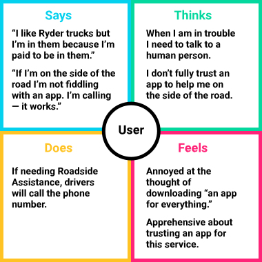
An empathy map helps us establish our personas by finding their voices, feelings, and motivations.For decades drivers have been calling for Roadside Assistance and it has worked. Stranded on the side of the road is not the ideal situation to experiment with an app.
Many drivers believe there are already too many useless apps on their phones. They won't download a native app unless it is absolutely necessary.
Despite various attempts to promote the apps and its features, many drivers still didn't know that they could use RyderGyde to get Roadside Assistance.
Randy's primary focus on every trip is to get the payload to point B efficiently. With over 20 years of experience, he's no stranger to persevering through obstacles.
In order to know what we are going to need to design, we need to illustrate a roadside emergency involving Randy.
My team and I assembled an affinity map to organize the results of our competitive analysis into gaps left by the competition and opportunities presented by these gaps.
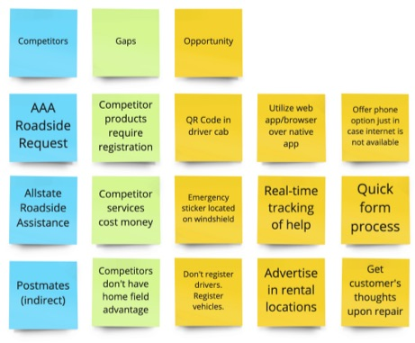
An affinity map is a great way to organize the results of the competitive analysis into opportunities left by the competition.With opportunities identified, we sketched, iterated, and refined wireframes for each step of the flow. Since users will have limited access to the internet and 91% of Americans own a smartphone as of 2024, mobile screen sizes were the natural focus for this project.
All windshields on vehicles have an emergency sticker with a QR Code that preloads vanity URL with essential information.
Instead of downloading a native app, we can utilize this feature as a web application to not only expedite adoption but assure compatibility.
Registering is the biggest hurdle with new users. If we create profiles for vehicles by their vehicle number, then the driver’s name is all that is needed at check-in for a complete profile.
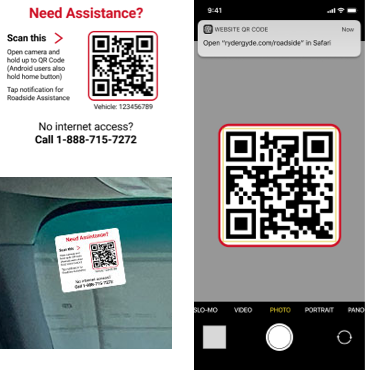
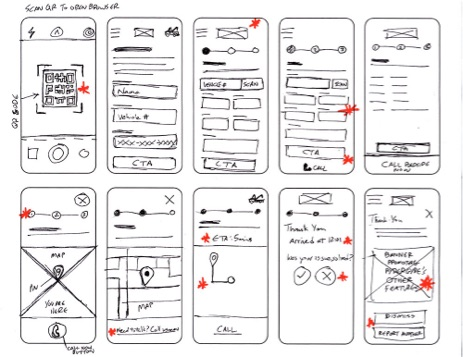
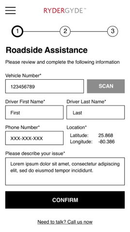
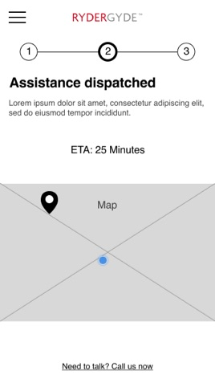
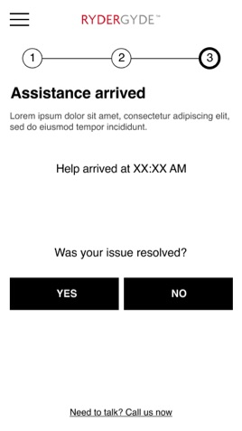
Observing users interacting with prospective designs is crucial to finding out if the designs work practically.
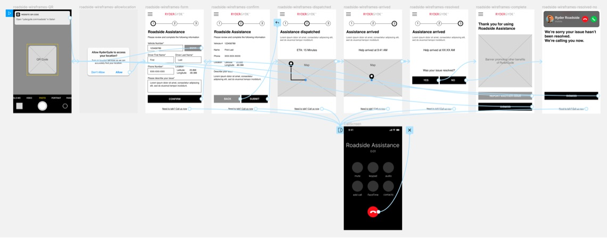
After assembling a lo-fi prototype to demonstrate a truck driver's journey to securing help from Roadside Assistance, I conducted live usability studies with 12 customers at an actual Ryder truck facility, 30 minutes each.
Based on live usability studies with 12 truck drivers at an actual Ryder facility, 30 minutes each, asking each to scan the QR code, complete the form, and receive assistance.
"Better than being put on hold"
"Saves so much time"
"I wish I knew about this before today"
"I just want help as fast as possible"
Results were overwhelmingly positive on the first round, so no retest was needed — the team moved straight to high-fidelity mockups.
After validating our solutions with users, the next step was to finalize our screens and bring them to life.
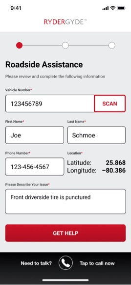
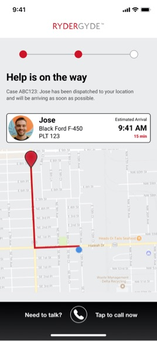
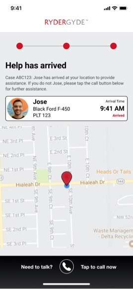
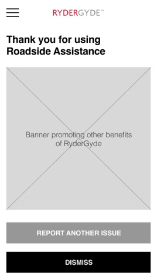
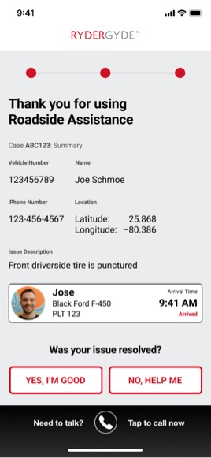
The final step before handing off our designs to the development team was to take our high-fidelity mock-ups and create a working prototype, which would be an integral part of future presentations, helping us verify the final details with testers, and serve as a visual template for the developers to emulate.
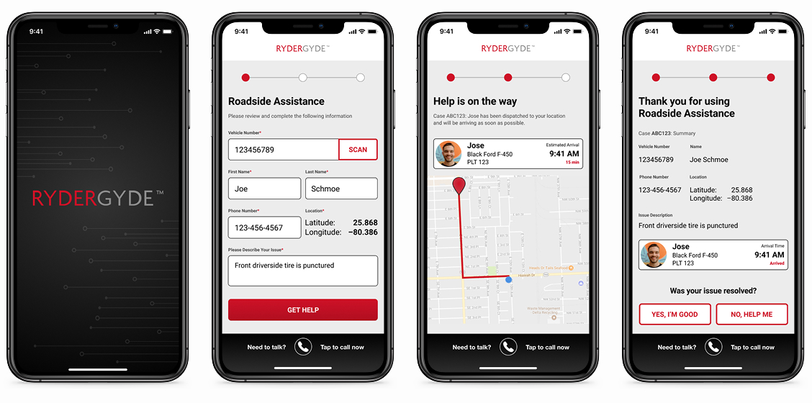
Roadside Assistance wasn't the only friction point drivers dealt with on the road. Fuel expense reconciliation was entirely manual — drivers turned in paper receipts, and accountants had to sort, match, and enter each one by hand before fuel taxes could be reported correctly across states. It was slow, error-prone, and pulled accounting time away from higher-value work.
I designed a mobile flow letting drivers photograph and submit fuel receipts directly from the road. Each receipt is logged digitally and organized for International Fuel Tax Agreement (IFTA) reporting, replacing the physical stack of paper receipts accountants previously reconciled by hand.
In a pre-pandemic world, QR codes were a forgotten craze even though native camera apps can scan them. But now that people don't want to touch anything, they've become commonplace, proving that integration and usefulness are necessary for technology to be accepted.
A Progressive Web Application (PWA) is a quick and cost-effective way to provide a simple experience for any user across platforms through a browser. For this project, its simplicity helped with user adoption and convenience.
A huge hurdle for new users is getting them to register. Not only is it a hassle, signing up for yet another app, but it can be a deal breaker. By eliminating this hurdle for drivers, we can quickly get them the assistance they desperately need and possibly win over a new user for the native app.